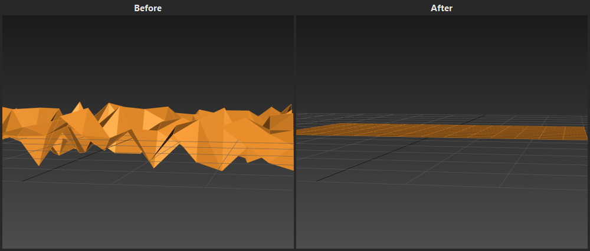
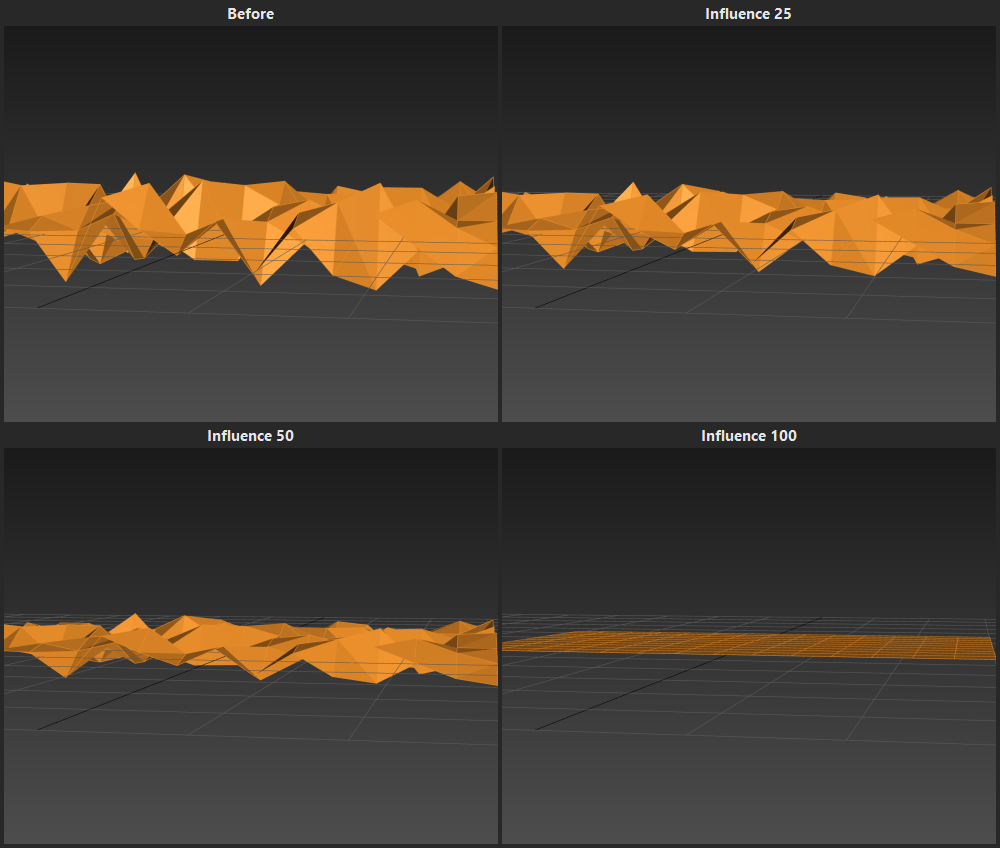
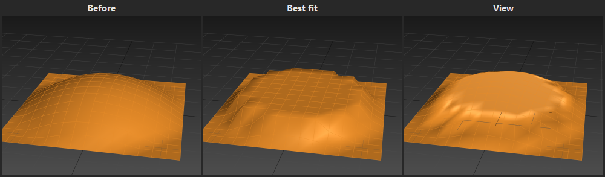

Flatten (LoopTools)
Presses selected faces, edges or vertices flat onto a plane.
Looking for the Flatten tool in the Align pie? That is a different tool: see Flatten.
What it does
Flatten takes each connected patch of your selection and moves its vertices onto one plane. You choose which plane to use, whether to keep some directions fixed, and how far the vertices are pulled towards the plane.

How to use it
- Open an Editable Poly (or an Edit Poly modifier) in the Modify panel and go to a sub-object level. Select faces, edges or vertices.
- Right-click in the viewport and choose LoopTools9000, then Flatten. The submenu is the first item in the lower-left part of the menu, and only shows at sub-object level.
- The tool runs at once with the settings you used last, and a settings box opens in the viewport. Change a setting and the result updates live.
- Press OK to keep it, Cancel to go back to the original shape, or Apply to keep it and run the tool again on top of the result.
Options
| Option | What it does |
|---|---|
| Plane | Best fit uses the plane that sits closest to the patch. Normal uses a plane facing the average direction the patch points. View uses a plane facing the active viewport. |
| Lock X / Y / Z | Stops vertices moving along that axis. |
| Influence | How far vertices are pulled onto the plane. 100 puts them fully on it, lower values go part of the way. |


Good to know
- Each connected patch gets its own plane.
- With edges selected, only pieces of three or more connected vertices are flattened. Single edges and two-edge pieces are left alone.
- With faces selected, every vertex of the selected faces is flattened.
- Keeping the result is one undo step.
- Your settings are remembered for next time.
- It works on Editable Poly and on the Edit Poly modifier.